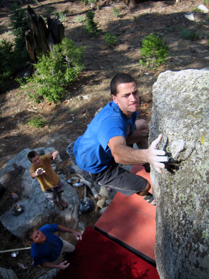

|
e-Grips Routesetting Interview: Joe Czerwinski 
eG: So, A little history first - how did you get your start routesetting and how long have you been a setter?
JCZ: I got my start setting at the Phoenix Rock Gym back in 1994. I asked the head setter if I could put up a route. He gave me a bucket of holds and told me to make a 5.7 on this tight vertical corner. I only had one requirement, it couldn’t be a ladder…… I think there was one match. About two years later, the head setter moved and I filled that position with a bunch of routes I thought were good. Knowing what I know now, I am sure everything was horrible. However, I learned a lot of the basics at the PRG, and the owner was very supportive of my work.
eG: You work at a major gym in Arizona, AZ on the Rocks. I’ve never been to the gym but from the pictures, it looks like there is a lot of steep terrain and great bouldering. What do you most like to set at the gym, routes or boulder problems?
JCZ: Well, the lazy guy in me prefers to set boulder problems, because I don’t have to lug around a 16ft fiberglass extension ladder. Boulder problem setting requires less time both physically and mentally, so it can be easier for a lot of people to do. What I hate about setting problems in my gym is the vertical kick plates at the base of the wall. This frustrates me to no end as it is increasingly difficult to even out problems reach wise.
Overall, I get the most satisfaction with well set routes. I have set some really bad ass lead routes, and found it more rewarding than making a brilliant problem because it is harder for everything to work out over 40 ft of climbing versus 12-15ft bouldering walls.
eG: When it comes to setting proficiently, people with as much experience as yourself are looked to for advice and direction. So, here’s the hardest question ever - in the gym, what makes a good route good? What makes a good setter good? Is it consistency, creativity? Learned, or intuitive?
JCZ: When it comes to what makes a good route good, its whatever I tell people…… Just kidding. I think it comes down to flow, movement and the originality of the climb. Crimp ladders on a 45 are great, but every gym has a climb like that. What your gym has that is different or "out of the box" is what can separate average setting from great setting. Since commercial setting is about education of the climber, you are testing individual aspects of climbing: footwork, sequencing, body position etc. So having good flow and movement on your routes is essential to the education of the paying customer. The originality of climbs seems to matter more as the difficulty increases. Typically, 5.7 climbers are psyched to have new climbs. I have never heard them complain that the new 5.6 is just like the last one.
Another part of being a good setter is the climbing experience of the individual. Since every climbing area is different, one who has climbed in multiple areas, on a variety of rock types, yields a better movement vocabulary. I think the problem with a lot of new setters is how much movement they know. Also, I think there is a great benefit to learning from everyone you work with. If I am stuck, I always ask the less experienced setters what they would do. Mental block is HUGE in this line of work and sometimes it takes a fresh brain to see something you don’t. No setter knows everything.
Lastly, I think setting both learned AND intuitive such that one is always learning new skills. However, its how the setter interprets those new skills and evolves them into something that applies to the walls he/she is working on.
eG: You coach the AZR Ascenders - has working with a junior team changed your approach to, or understanding of setting?
JCZ: OMG, this is HUGE. I have completely changed my approach to commercial setting because of the team. For example, everything 5.10+ and under is based off the reach of the shortest kid (right now, that is 60 inches between hand and foot). If it is any longer, she can’t reach it. This way, when I am coaching, I have more terrain for her to climb and get stronger on. I am the BIGGEST advocate of making climbs reach friendly.
Additionally, it has changed my understanding of how kids climb, and what their short body can do on the wall compared to mine. The biggest downfall of this has been in my own climbing. I have a group of girls who are REALLY strong, so I have to set V8 and V9 for them to work. Because of this, there are no moves where my body extension feels "maxed". Therefore, when I climb, I am always looking to get my feet up to avoid feeling extended.
eG: You recently came up to Boulder for the ABS Nationals with your team, and put on a superb performance yourself, making finals in a very stiff crowd of competitors and getting the spectators psyched! What motivates you to compete and were you happy being a participant in the event? Any comments, as a competitor who is also an experienced comp setter?
JCZ: I am always motivated to compete because it is fun for me. I have a great time bringing everything to the table and throwing down. I think you can find out something about yourself when you can walk away from something like that and know you could not have tried any harder. It’s a good feeling knowing you can "summon the beast" when you have to.
I think being an experienced setter gives me an edge in competition, as I am always on the lookout for all the tricks I use when I am setting a comp. Typically, I can feel flow and movement really well, and I have more success on problems that are made that way.
Also, it seems like many of the top setters don’t compete. I think it is really important to compete at that level because you have a better understanding of what the athletes are going through within the given format of the competition.
As a setter, your outlook on the difficulty of problems/routes can be skewed as you will climb it, then tweak it, over and over. Meanwhile, the setter is learning the muscle memory of the problem, and with each attempt the problem can feel easier. If you are not careful, it is very easy to "tune-up" the problem too much and shut down the field.
eG: I remember reading your entry in "The Art of Coursesetting", a couple of years ago and thinking.. that’s a pretty bold stand to take.. I agreed with much of it, but could see a general backlash, some perhaps saying - "that’s not climbing" - what’s your take these days?
JCZ: My opinion has evolved a bit, but that is the ticket. For someone to say "that’s not climbing", is ridiculous? There are so many different types and sub-cultures to climbing its crazy. Its easy for someone to like a single aspect of climbing, and not to like another. For the same reason there is not one person in the past year who has: summated Mt. Everest, climbed M12, bouldered V13, onsighted 14a sport, fired 13c crack while dominating the World Cup circuit. We all have our preferred method of climbing.
However, I think if climbing is going to survive on television, it is going to be with the crazy gymnastic, dynamic climbing style of the Asian X-games, or other high level production events. As an industry, we have to ask ourselves how we want the sport to grow. Oddly enough, many people don’t want climbing to evolve for fear of losing the "roots" of climbing. This is total BS. Look at professional bullriding…… do you think that encompasses the true spirit of a rodeo? Hell no, but a group of riders found a way to do what they love and make a TON of money doing it. Why can’t climbing do the same?
When it comes to competition climbing, the crazier the better; swinging holds, PVC pipes, whatever. Let’s make a toilet bowl out of urethane and bolt it to the wall and see what we can do. In know that is extreme, but non-climbers have no idea how hard little crimps are. However, all of them could imagine what it would be like to hang onto a toilet bowl hanging from the ceiling.
All the creativity in the world is great, but in the end, it comes down to what the sponsors want. If Bud Light will give 50K to host a dyno-comp, why not? Is it "real climbing"? Not really, but it’s a way for athletes to showcase a singular aspect of the sport and make some good money. Millions of people have laced up ice skates, so all those people have a grasp on the difficulty of a triple-lutz in figure skating. As setters and organizers, we need to create a competition that captivates the un-athletic beer drinkers of America. What is more likely to hold their attention: static slopers, or double dynos with footless rose moves? There is a good reason why speed climbing lasted longer than any other form of climbing at the X-Games……because people love a good race. Did I mention Nascar?
eG: Having set such a different style event for many years and worked with many different shapes from various manufacturers - which hold types would you say you prefer for such a dynamic style of setting and why?
JCZ: Funny as this may sound, but Tony Yaniro has some shapes that were truly ahead of their time. Especially some of his thread holds. They are great for high end figure-fours and un-trackable campus moves. I am a big fan of dual texture everything. I hate it when the shape of a hold allows a tracking foot placement. If I want you to use your feet on a given section, I will bolt one on.
As far as hold type for the AsianX, we use more positive holds than slopers for sure. However, the success comes from a diverse hold selection, which can be very challenging because we bring most of the shapes with us. Every year, I wonder how we are going to top the problems from the previous year, but somehow we find a way. A big part of the success of our setting comes from brainstorming ideas with the other setter.
eG: What about e-Grips in particular? As a setter - do you have any favorites? Any comments on e-Grips design? What would you like to see in the future?
JCZ: To be honest, I was not crazy about e-grips 3-4 years ago. However, I am finding the genius in the shapes the more I use them. I like the artistic nature of the shaping. I have tried my hands at shaping a bit, and it is way harder than one would think. I would like to give some major props to the shapers of e-grips. You boys got some serious skills. Some of my favorites are the comfy crimps and many of the foothold sets. Bubble wrap slopers, and myorcan tufas are great as well. I love the Hueco Wonder hole for one handed dynos.
What I think hold manufactures are missing is the opposite hand shape. For example, some crimps are shaped right hand specific. Well, make me the left hand version. I know this is incredibly time consuming, but its lacking in this industry. Also, I would love to see untrackable pockets for steep climbing. I have a lot of ideas for holds which are not currently available.
eG: Thanks Joe - hope to see you competing in future events and bringing some strong youngsters onto the scene!
|